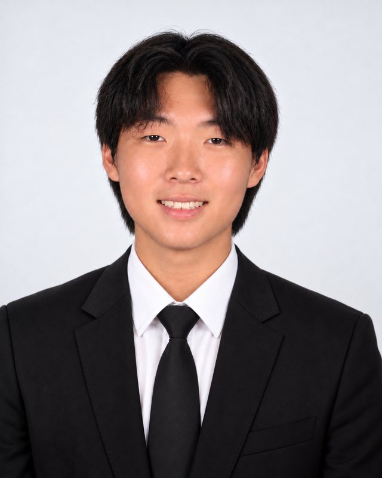

Two students, one clinic, a hundred mothers at a time.
Heartlines International was founded in 2026 by Jason Ham and Allison Kim, high school students in San Jose, California, to bring practical health support and real encouragement to mothers who are often overlooked.
Our story
It began with a mission trip to the Philippines in February 2026, where co-founders Jason Ham and Allison Kim saw firsthand the work of a free maternity clinic that cares for about 450–500 mothers a year, many of them young and on their own. Iron-deficiency anaemia is common and serious in pregnancy,[1] yet mothers often skip medication they don't see as essential, and the emotional weight of new motherhood too often goes unaddressed.[5]
Together they set out to build something that lasts: health guides in Tagalog and English, checked by the clinic's medical team, handwritten encouragement from student volunteers, and iron tablets the clinic buys locally, delivered cycle after cycle.
Our approach
Clinic-led, not guesswork.
The clinic tells us what its mothers need. Its medical team checks every guide before we print, and its licensed staff buy and give the iron locally.
Our progress so far
- How it started
- Feb 2026Mission trip to the Philippines; first visit to the clinic.
- Mar 2026Back home, we started brainstorming how to turn what we saw into a project that could last.
- Apr 2026Reached out to a partner maternity clinic in the Philippines to ask what its mothers need most.
- Building it
- AprSpring–summer 2026ndash;Aug 2026Drafted our materials: the two health guides and the plan for each mother's kit.
- Aug 2026Incorporated as a California nonprofit public benefit corporation.
- Aug–Sep 2026The clinic's medical team reviewed our two health guides.
- Oct 2026Applied to the IRS for 501(c)(3) status. Opened our bank account. Website launched.
- Where we are now
- NowPreparing for our first event and our first cycle of kits.
- Nov 8, 2026First fundraiser, at Chipotle in San Jose.
- Fall 2026First cycle: kits for 100 mothers.
How a cycle works
- The clinic's medical team checks our health guides before anything is printed.
- Student volunteers write a card for every mother and pack the kits.
- We ship the kits and send funds for iron tablets, which the clinic buys locally.
- Clinic staff give each mother her kit during prenatal care and tell us what to improve next time.
Our founders

Co-Founder & Co-President
Jason Ham
Co-Founder & Co-President
Allison Kim
Board and officers
Joshua Kim
Secretary & Director
Hyungjun Ham
Chief Financial Officer
Accountability
Heartlines International is a California nonprofit public benefit corporation (EIN 42-4681667). Our application for federal 501(c)(3) tax-exempt status has been filed with the IRS and is pending. Every dollar is recorded, and supplies are paid for against itemized receipts.
Sources
- World Health Organization. Anaemia (fact sheet), 10 February 2025. who.int/news-room/fact-sheets/detail/anaemia
- World Health Organization, Global Health Observatory, via World Bank World Development Indicators. Prevalence of anemia among pregnant women (%), Philippines: 24% in 2023 (indicator SH.PRG.ANEM). data.worldbank.org/indicator/SH.PRG.ANEM?locations=PH
- Peña-Rosas JP, De-Regil LM, Garcia-Casal MN, Dowswell T. Daily oral iron supplementation during pregnancy. Cochrane Database of Systematic Reviews 2015, Issue 7, CD004736. doi.org/10.1002/14651858.CD004736.pub5
- World Health Organization. Daily iron and folic acid supplementation during pregnancy (e-Library of Evidence for Nutrition Actions), from WHO recommendations on antenatal care for a positive pregnancy experience. who.int/tools/elena/interventions/daily-iron-pregnancy
- Fisher J, Cabral de Mello M, Patel V, Rahman A, Tran T, Holton S, Holmes W. Prevalence and determinants of common perinatal mental disorders in women in low- and lower-middle-income countries: a systematic review. Bulletin of the World Health Organization 2012;90(2). Pooled prevalence 19.8% after childbirth. scielosp.org/article/bwho/2012.v90n2/139-149. Summarized by the World Health Organization, Maternal mental health: who.int